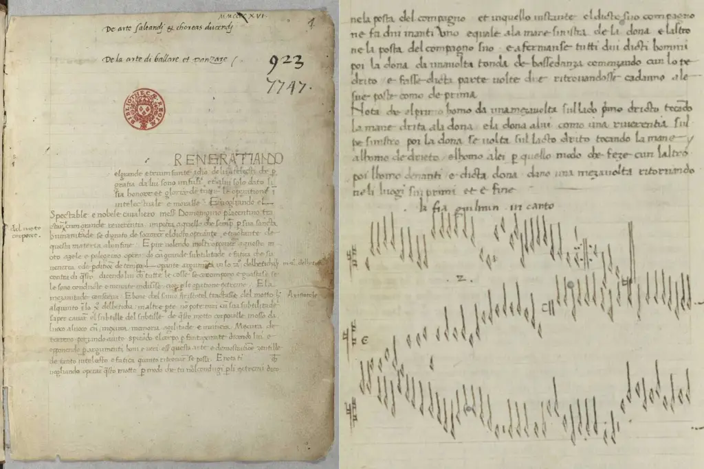
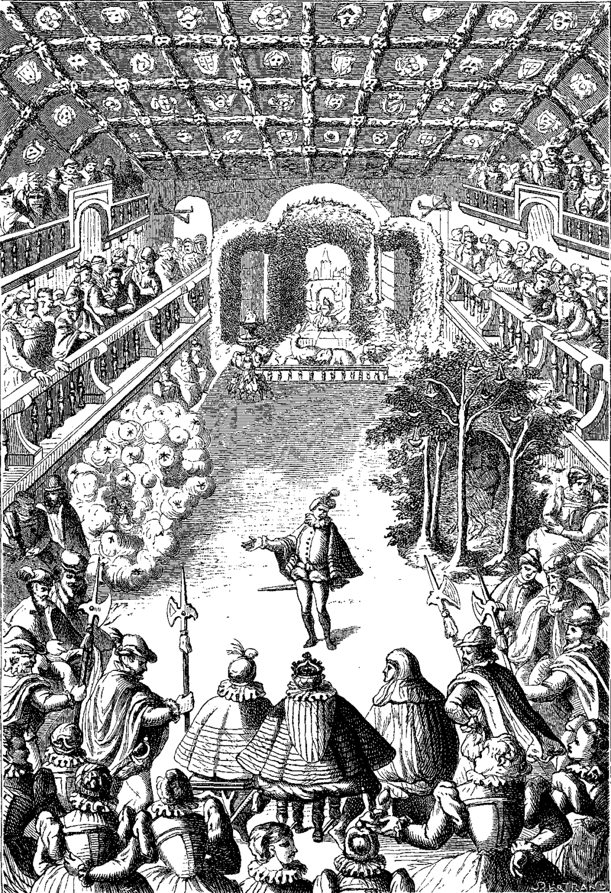
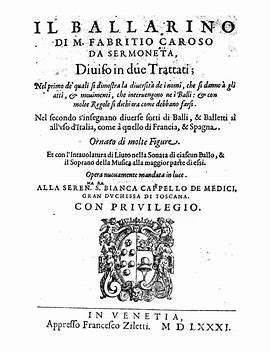
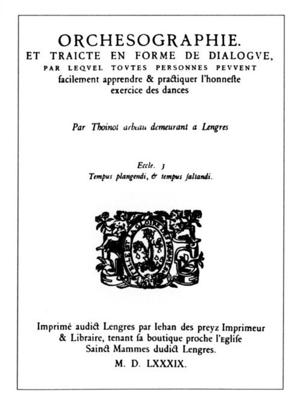

Século XV
Século XV
O Ballet Clássico surgiu nas cortes italianas, durante o período renascentista. Inicialmente, ele não era uma forma de arte como conhecemos hoje, mas sim uma forma de entretenimento aristocrático, que combinava dança, música, poesia e teatro para celebrar casamentos e ocasiões importantes.
O termo ballet se consolidou na França, e vem da palavra italiana balletto, diminutivo de ballo (dança). A dança era apresentada em grandes salões, com figurinos elaborados e coreografias que exaltavam a elegância.
Dentre poucos registros desse período, destacam-se:
• Em 1473, Pietro Riario organizou o Baile de Hércules em Roma, que entrou em partes no grande espetáculo Triunfo romano de Eleonora d’Aragona. Em Baile de Hércules, existiam várias danças mouriscas em um tempo muito rápido, que carregavam grande efeito dramático.
• Em Tortona (Itália), no ano de 1489, Bergonzio di Botta organizou uma festa coreográfica para comemorar o casamento do Duque de Milão, Gian Galeazzo Sforza, com Isabella d'Aragona (princesa napolitana). Uma dança de nome Entrée dava início a cada parte da festa, e enquanto os convidados festejavam, era apresentada uma série de cenas coreográficas.
• Em 1496, em Milano, Ludovico Sforza (il Moro), tio de Gian Galeazzo Sforza, abriu a festa Paraíso, grande apresentação com elementos de dramaturgia, canto e dança. Todo o figurino e construção de impressionantes mecanismos cênicos foram feitos por, nada mais, nada menos, que Leonardo da Vinci.
Poucos são os nomes do século XV conhecidos hoje que podem ser considerados profissionais da área, só conhecemos aqueles que escreveram sobre a dança, sobretudo Domenico de Piacenza, que é considerado o primeiro teórico da dança. Ele ensinava dança aos nobres e escreveu o livro De arte saltandi et choreus ducendi (Sobre a arte da dança e condução de danças), onde optou pelo termo Ballo ao invés de danza. Por essa razão, as suas danças ficaram conhecidas como Balletto, e é possível que a escolha da palavra, levou ao sentido da palavra Ballet como a conhecemos hoje.

Páginas de De arte saltandi & choreas ducendi
(A arte da dança e coreografia), c. 1450, de Domenico da Piacenza.
Fontes e referências:
BOURCIER, Paul. História da dança no ocidente. São Paulo: Martins Fontes, 1987.
earlymusicmuse.com
anabotafogomaison.com.br
Século XVI
Século XVI

O Ballet se desenvolveu ainda mais quando Catarina de Médici (1519 – 1589), uma nobre italiana, da poderosa família Médici de Firenze, se casou com o rei da França, Henrique II de França, e levou músicos e coreógrafos italianos para a corte francesa, além de seu gosto refinado por festas e espetáculos cênicos com dança.
Catarina teve um papel fundamental na introdução e desenvolvimento do Ballet de Corte na França, financiou e organizou eventos grandiosos que integravam dança, teatro, música e poesia, como em Le Ballet des Polonais (O Ballet Polonês), montado por motivo da visita dos embaixadores poloneses em 1573, e tinham também apresentações com temas mitológicos.
O Ballet Comique de la Reine (Ballet Cômico da Rainha) é considerado o primeiro Ballet de verdade da história, uma vez que era composto por uma apresentação com enredo contínuo, música original, dança coreografada, cenário e figurino.
Estreou em 1581, na Corte francesa, no Palácio do Louvre, na ocasião do casamento de Marguerite de Lorraine. Foi realizado com o apoio de Catarina de Médici. Com música de Jacques Salmon e Girard de Beaulieu e coreografado pelo italiano Baldassare da Belgiojoso, radicado sob o nome de Balthasar de Beaujoyeulx, a serviço da corte francesa. O Ballet teve duração de cerca de 5 horas, contando com música ao vivo, dança, canto e poesia. O Enredo contava a história da feiticeira Circe, personagem da mitologia grega que seduzia e transformava homens em animais. A narrativa abordava temas de magia, ordem e harmonia, refletindo o desejo da monarquia de transmitir uma imagem de poder e controle sobre o caos.
Importância histórica desse período:
• Em 1581, o italiano Fabritio Caroso publicou Il Ballarino, um livro técnico que sistematizou as danças aristocráticas da época.

Il Ballarino, 1581, de Fabritio Caroso.
• Entre 1580 e 1585, foi construído o Teatro Olimpico de Vicenza, projetado por Andrea Palladio, que hoje é reconhecido como patrimônio mundial pela UNESCO.
Teatro Olimpico di Vicenza
• Já em 1588, na França, Thoinot Arbeau publicou Orchésographie, livro que registra uma das primeiras descrições da posição “en dehors”.

Orchésographie, republicado em 1589, Thoinot Arbeau
Fontes e referências:
BOURCIER, Paul. História da dança no ocidente. São Paulo: Martins Fontes, 1987.
anabotafogomaison.com.br